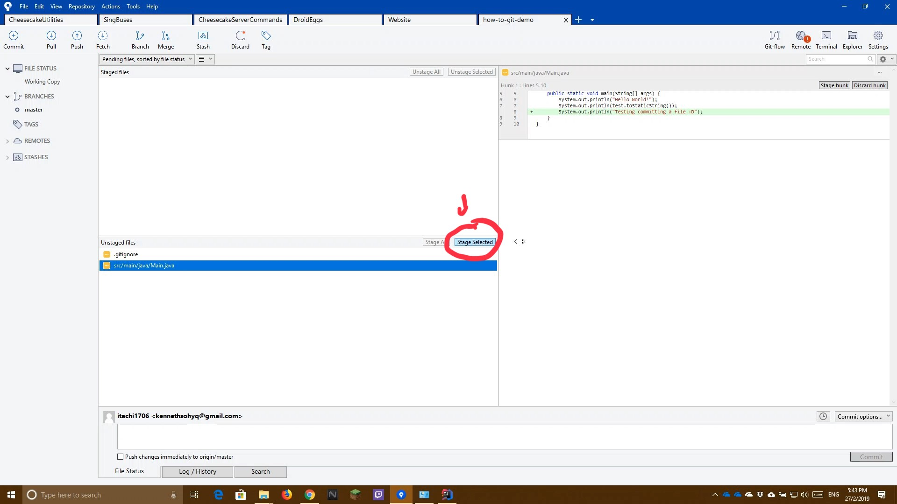
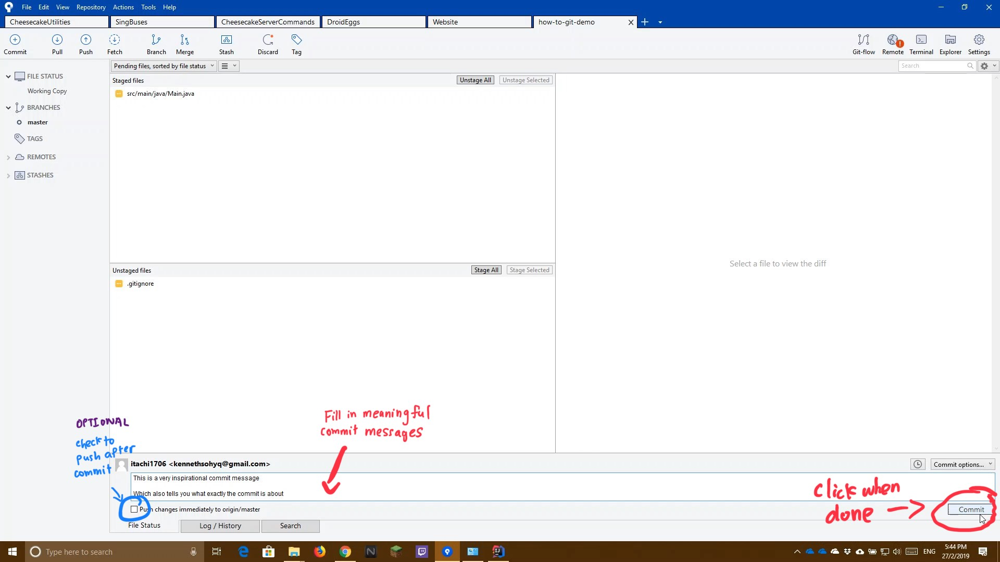

The following guide shows you how to "save" your work by committing it into your local repository
Select the files you wish to commit and click Stage Selected
(Alternatively you can select Stage All to select all files)

The files you have selected should show up in the Staged Files section
Enter a meaningful commit message to describe what you are committing
Optional: Check the "Push" checkbox if you wish to push the commits to GitHub immediately after you commit
When you are done, click the commit button to commit the code

Demo Video The following is a video on how this is being done. Read the how-to guide before watching the video for actual steps to do it
Console Commands Used
git add [-A] "file name" # Add files to commit (-A if you wish to add all files)
git status # View Tracked Files
git commit -m "'Commit Message'" # Commits the file with a commit message